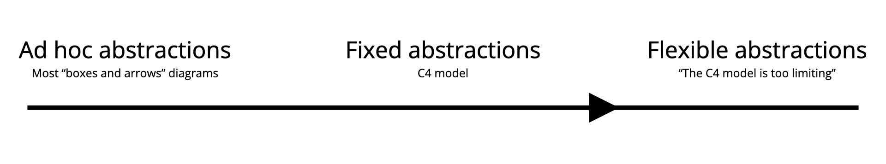
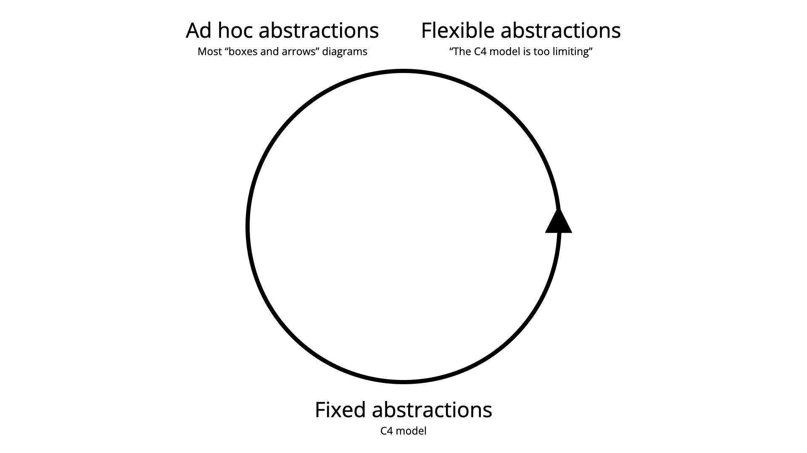

Frequently asked questions
Can we change the terminology?
This terminology (context, containers, components and code) works for many organisations and many types of software. However, sometimes an organisation will have an existing terminology that people are already familiar with. Or perhaps “components” and “classes” don’t easily map on to the technology being used (e.g. functional languages often use the terms “module” and “function”).
Feel free to modify the terminology that you use to describe software architecture at different levels of abstraction. Just make sure that everybody explicitly understands it.
Can we add more abstraction levels?
“A database is a database; debating whether it is also a Container or a Component just isn’t worthwhile.”
This quote, from a blog post, raises a couple of interesting questions about the C4 model:
- Are the four levels of abstraction too limited?
- Can we add more levels of abstraction?
Modern software systems are comprised of many different types of compile-time, runtime, deployment, and infrastructure building blocks. With this in mind, it can sometimes be difficult to categorise each of these into the various abstractions that make up the C4 model. A seemingly easier approach is to just add more levels of abstraction as required, rather than spending time debating whether a “database” is a container or a component.
The problem here is that we’re often too imprecise with the terminology that we use in our day-to-day work, which leads us to make the wrong decisions when trying to categorise the building blocks that make up our software systems. The word “database” is used in the quote above, but is it being used to refer to a database server, a database schema, a collection of related data, or something else entirely? Why is this important? As an example, the definition of the word “database” dramatically affects the meaning of the following statement:
“microservices shouldn’t share a database”
As an industry, we need to be more precise with the terminology that we use. Debating whether a database is a container or a component forces you to understand exactly what you mean by the word “database”, before mapping it onto the abstraction levels provided by the C4 model. The power of the C4 model is the small set of fixed/named hierarchical abstractions that help teams reason about their software systems in a structured and more precise way, both within and across engineering teams.

Whenever teams say, “C4 is too limiting - we need more abstractions for more flexibility”, it’s usually for one of the following reasons:
- The team has misunderstood the C4 model and are misusing the abstraction levels, requiring more to be added.
- Teams want to add more abstraction levels in order to model things that are really organisational constructs or groupings, rather than abstractions in their own right - subsystems, bounded contexts, layers, libraries, etc.
Although the C4 model provides enough for most software development teams, you should certainly feel that you can add more abstraction levels if you have a genuine need. After all, the agile mindset tells us to “inspect and adapt” in order to improve the way that we work. This should be seen as an advanced manoeuvre though, and you should only consider doing it if you’re willing to put the effort into precisely defining those additional levels of abstraction. Failure to do so will ultimately lead you back to where we are today, with diagrams showing ad hoc abstractions caused by an impreciseness of terminology.
